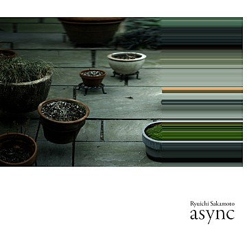

ASYNC _ RYUICHI SAKAMOTO

- Track - Andata//Disintegration//Solari//Zure//Walker//Stakra//Ubi//Fullmoon//Async//Tri//Life, Life//Honj//ff//Garden
- Why? - 그의 삶에 죽음의 그림자가 드리웠을 때, 그는 그의 인생을 음악을 통해 바라보았다. "Async"는 아직 젊은 나에게 생을 관통하여 죽음의 문턱을 조금은 느낄 수 있게 해주었다.
- Live -